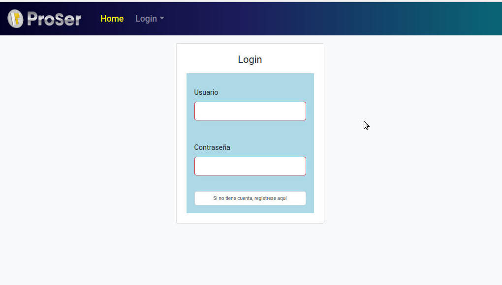
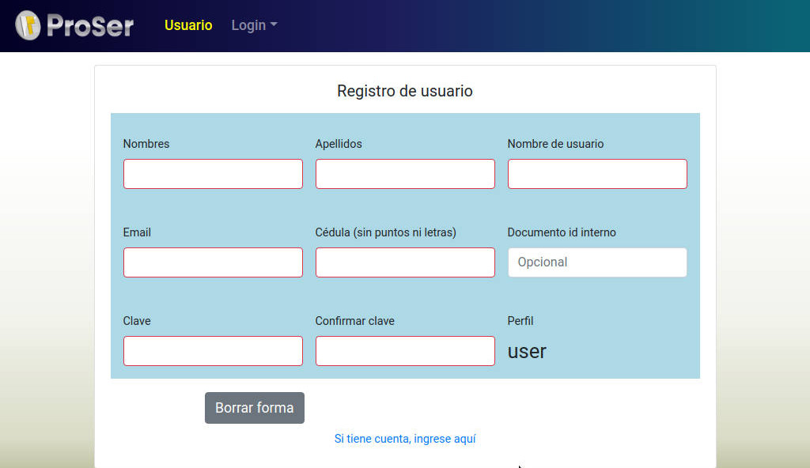

La imagen anexada es la página principal de inicio de la aplicación de ProSer en el caso de no estar logueado. Esta solo tiene dos opciones de uso del usuario:
Home
La opción de Home redigira al usuario hacia la misma página de inicio de ProSer, el punto de partida.
Login
Esta opción contiene la funcionalidad de login y register, para que así los usuarios de la aplicación puedan loguearse para poder usar las funcionalidades y opciones de ProSer.
Al iniciar sesión o registrarse el usuario ingresa al sistema de ProSer con funcionalidades asignadas dependiendo del tipo de perfil del usuario. En el menú se divisará la opción de Secciones que contiene las funcionalidades que componen la reportería ProSer.
Login

Para poder inicializar Proser es necesario acceder con el nombre usuario y contraseña como se visualiza en la imagen. Si los datos ingresados son incorrectos, el sistema negará el acceso. En caso de no tener una cuenta de ProSer debe solicitarla al departamento de sistema o al encargado de proporcionar los mismos, estos le entregaran un usuario y contraseña con los cuales podrá entrar al sistema.
También es factible, la opción de registrarse usted mismo en la opción register de ProSer pero solo cuando la opción de autoregister esté activada.
Registro del Usuario

Esta sección es para que el usuario pueda registrarse y tenga acceso a las herramientas que ofrece ProSer. Los datos que se deben llenar para registrarse son los siguientes:
- Nombres: Campo correspondiente a los nombres del usuario.
- Apellidos: Campo correspondiente a los apellidos del usuario.
- Nombre del usuario: Este campo le permite crear un nombre corto para iniciar susesión en la aplicación.
- Email: Correo del usuario o el asignado por la empresa, y debe ser válido para que el sistema lo pueda aceptar.
- Cédula de identidad: Campo donde solamente se permiten números y debeinsertar su cédula de identidad.
- Documento interno: Campo donde inserta el número que le asignaron en la empresa, en caso de que no exista este dato se recomiendo colocar el númerode cédula nuevamente.
- Clave: Campo donde crea su clave de usuario para ingresar y utilizar Proser.
- Confirmación de clave: Aquí debe ingresar nuevamente la contraseña creada con anticipación.
NOTA: Si esta sección no es visible es debido a los criterios de la institución y será ejecutada por el departamento encargado de la asignación de cuentas para usar Proser.
Debe contactarse con el departamento para que ellos puedan crear su cuenta y darle los datos correspondientes a su cuenta para así loguearse en el sistema de ProSer debido a que la opción de autoregister se encuentra inactiv